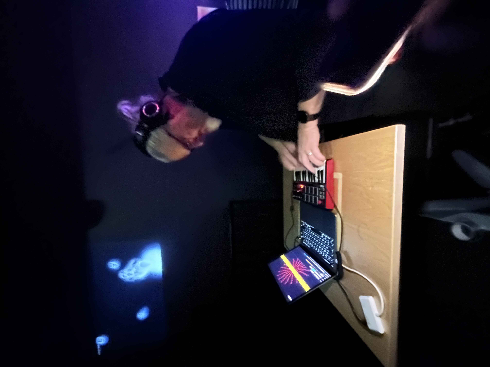
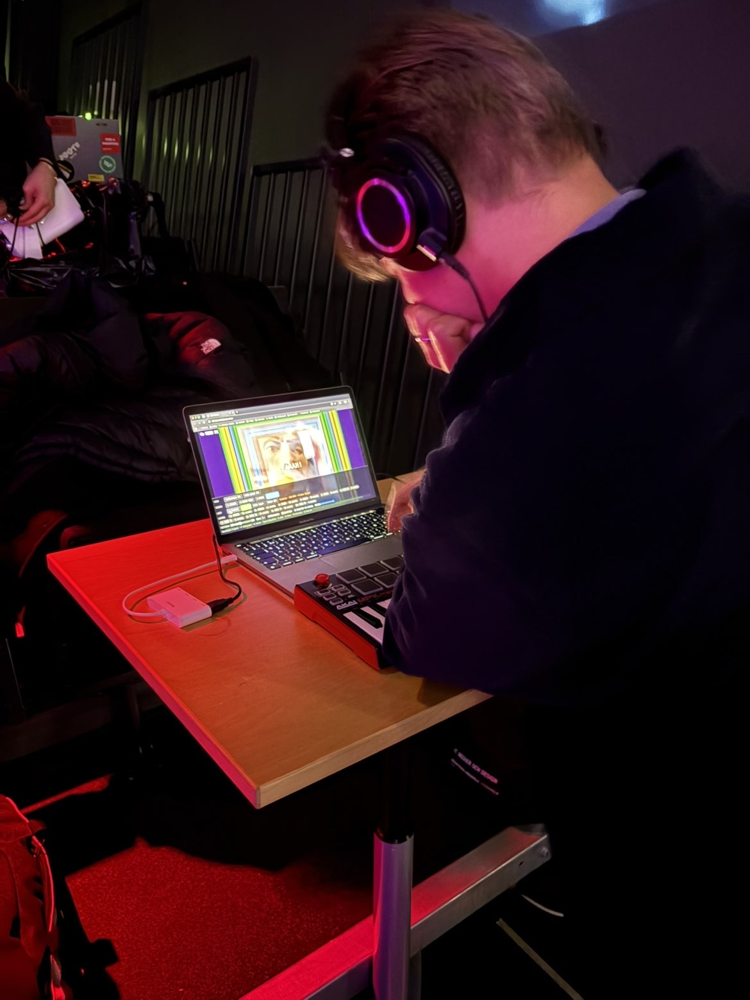
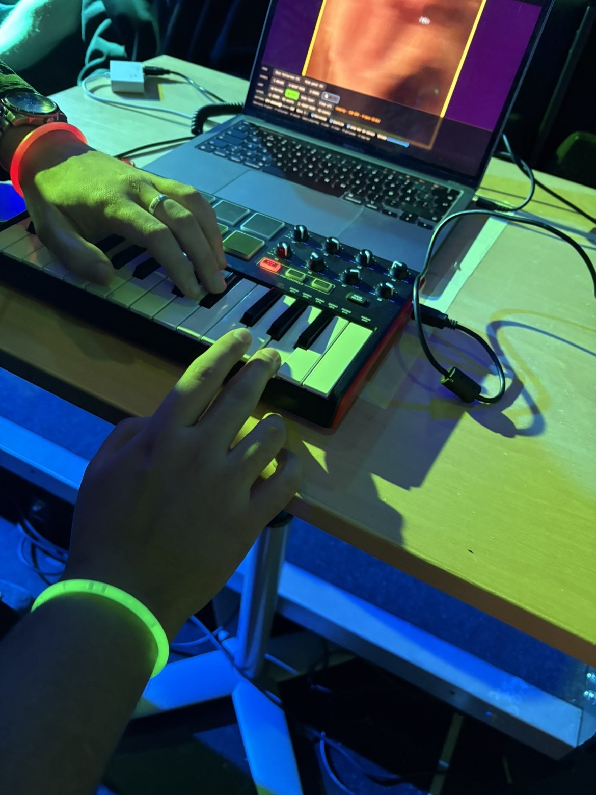

01. Exploring Sound
Exploring how musical sounds can inspire visual ideas and creative expressions.
CREATIVE PROGRAMMING PROJECT
Exploring the connection between sound, music and visual expression.
Explore the projectGET TO KNOW ME
Hi! My name is Gustaf Jonsson, and I'm a 22-year-old creative student with a passion for making and exploring new things. I've always enjoyed creating, from digital projects to physical works, and I'm constantly interested in finding new ways to express my creativity.
I'm open-minded, curious and enjoy thinking outside the box. I'm currently in my second semester at Södertörn University, studying IT, Media and Design, where I'm developing my creative and technical skills and exploring the possibilities of combining technology, design and visual expression.
OUR FINAL PROJECT
Sound in Motion is an interactive project that explores the connection between sound, music and visual expression. Using a MIDI keyboard and code, we transform musical sounds into visual elements, where each sound creates its own unique part of a larger composition.
As different sounds are combined, the visual elements interact and develop into a complete, evolving visual experience. Visitors can experiment with the MIDI keyboard at interactive stations and create their own visual compositions.
Our aim is to create a playful and engaging experience that spreads positive energy while exploring the relationship between music, technology and visual art.
BEHIND THE PROJECT
A closer look at the creative process behind Sound in Motion.

Exploring how musical sounds can inspire visual ideas and creative expressions.

Experimenting with visual elements and the relationship between sound, colour and movement.

Combining different elements into one interactive visual experience.
THE FINAL RESULT
Experience Sound in Motion through our final project presentation.
TRY IT YOURSELF
Click anywhere inside the area to create colourful particle effects.
Loading interactive experience...
Click or tap to create your own visual effects.